Битката за тока на града започва.
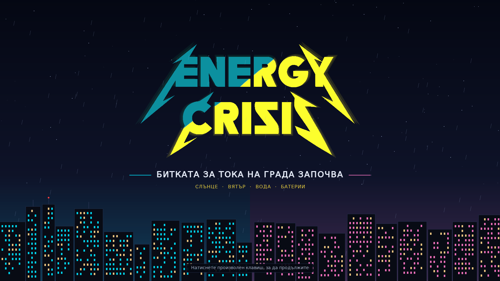
Слънцето залезе преди три часа, а целият град току-що пусна печките и телевизорите. Откъде ще дойде токът?
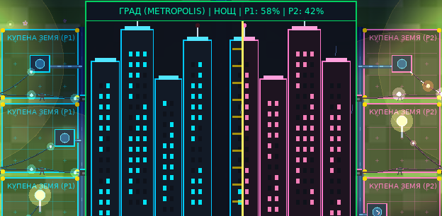
Двама енергийни магнати захранват един град. Който го захранва по-надеждно, печели територия.
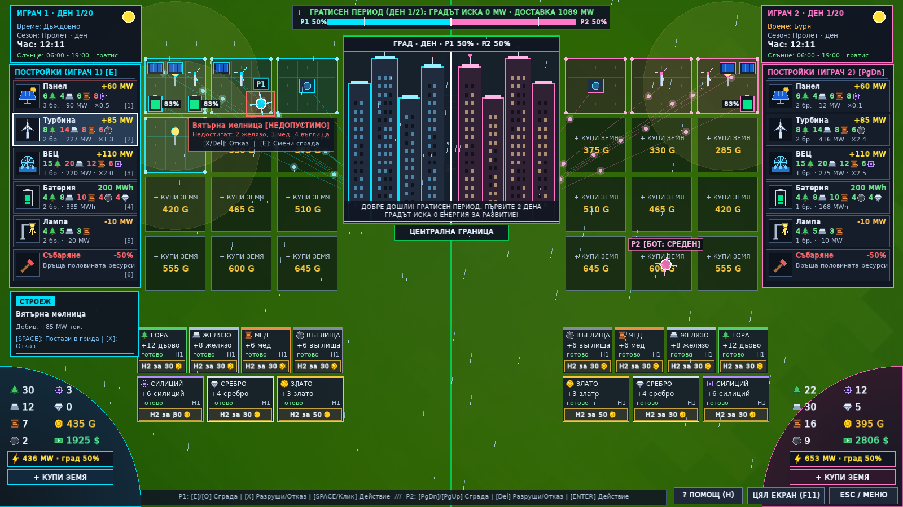
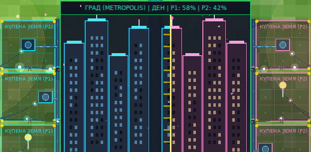
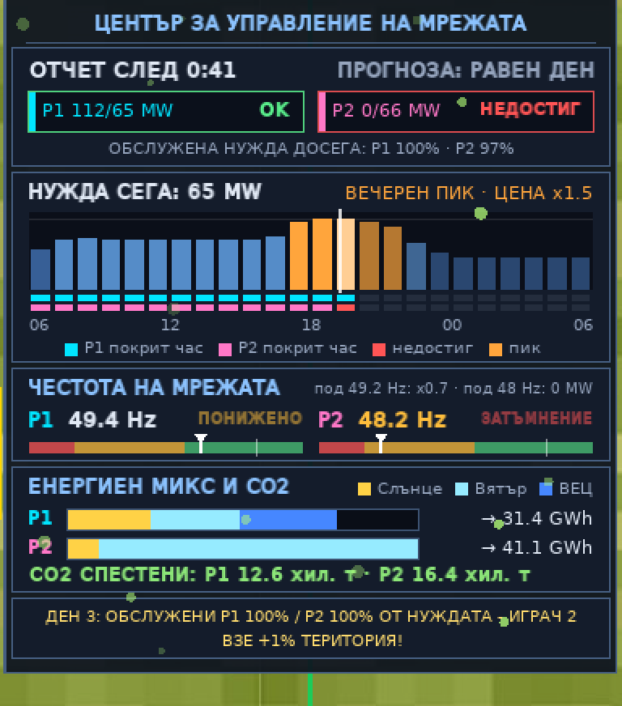
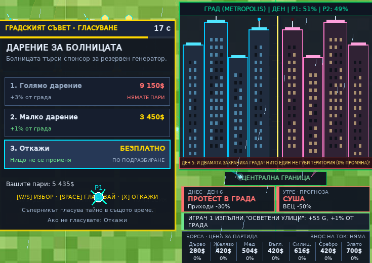
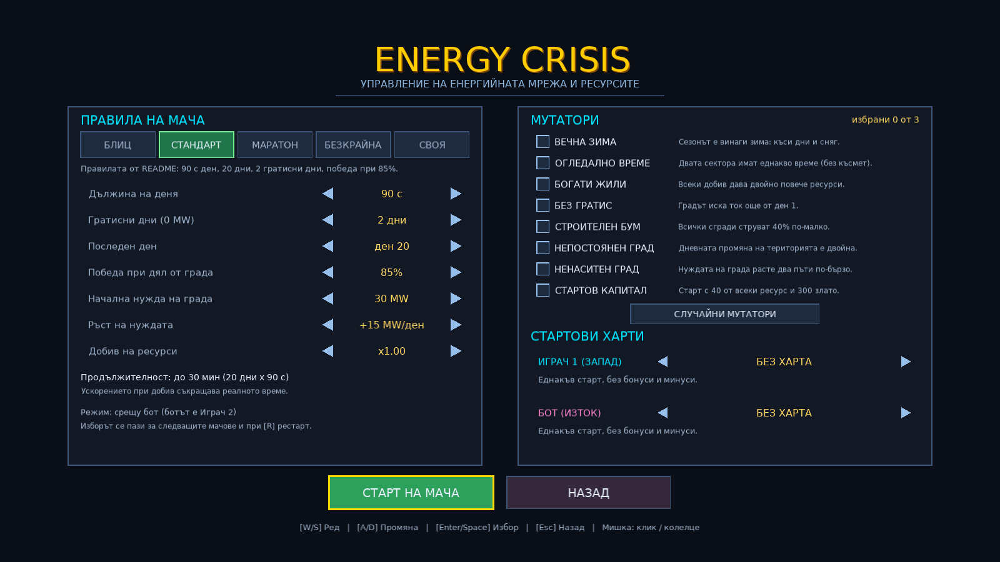
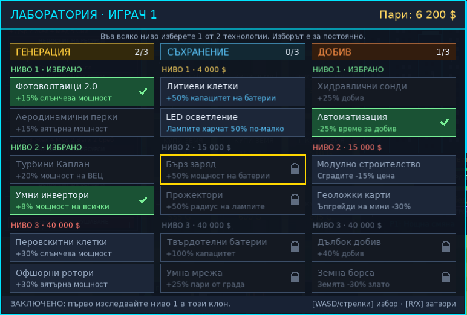
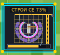
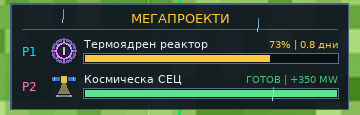
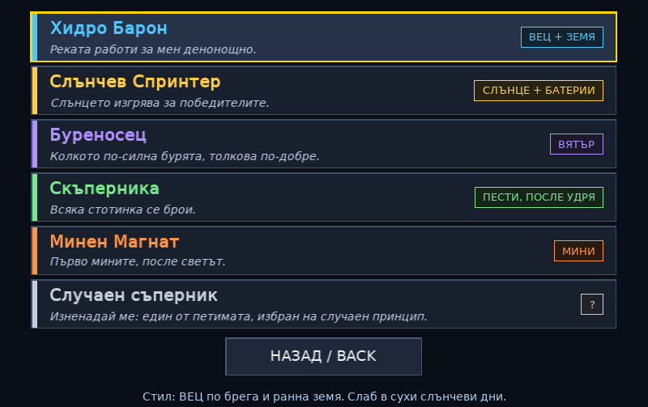
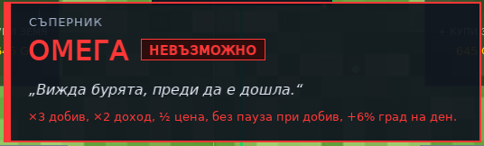
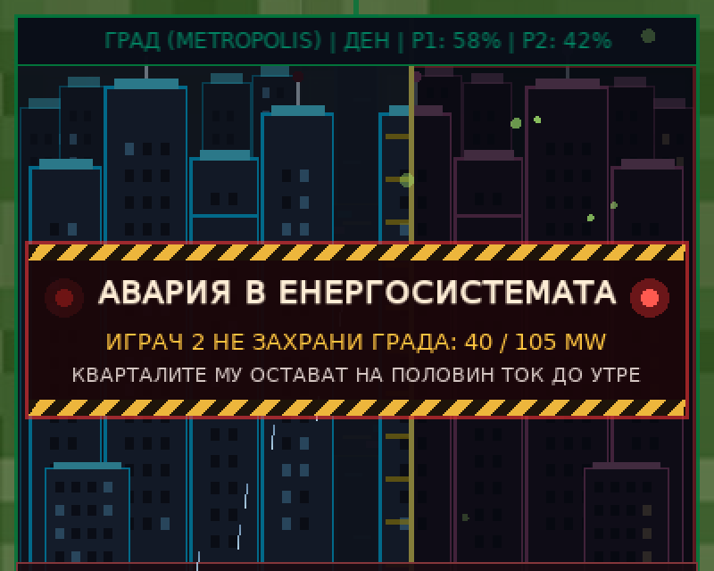
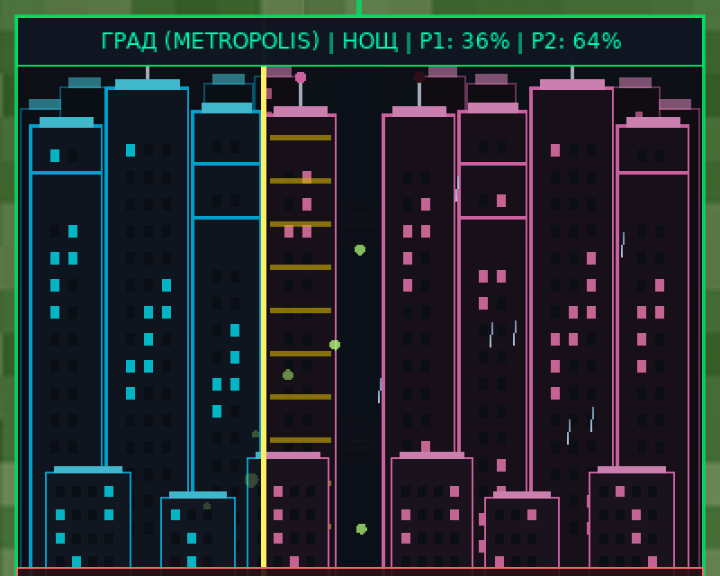
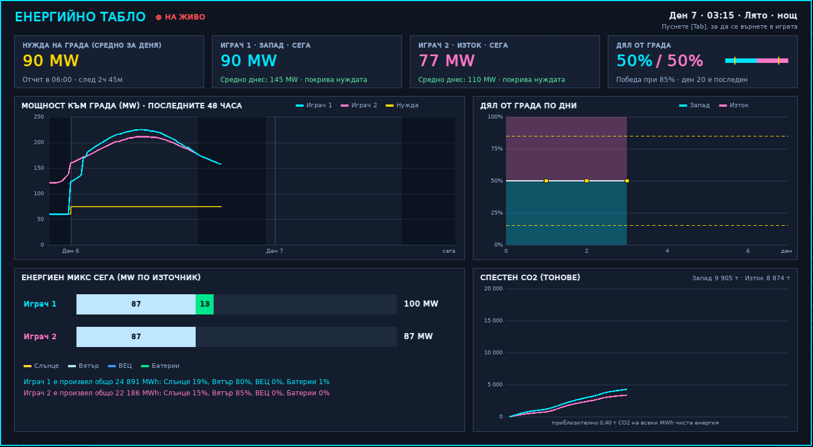
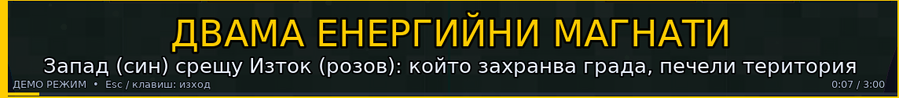
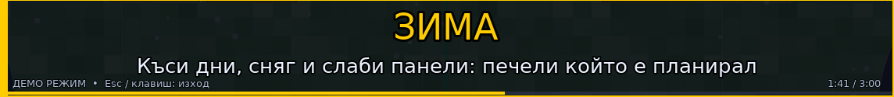
Energy Crisis превръща енергийния преход от урок в състезание.